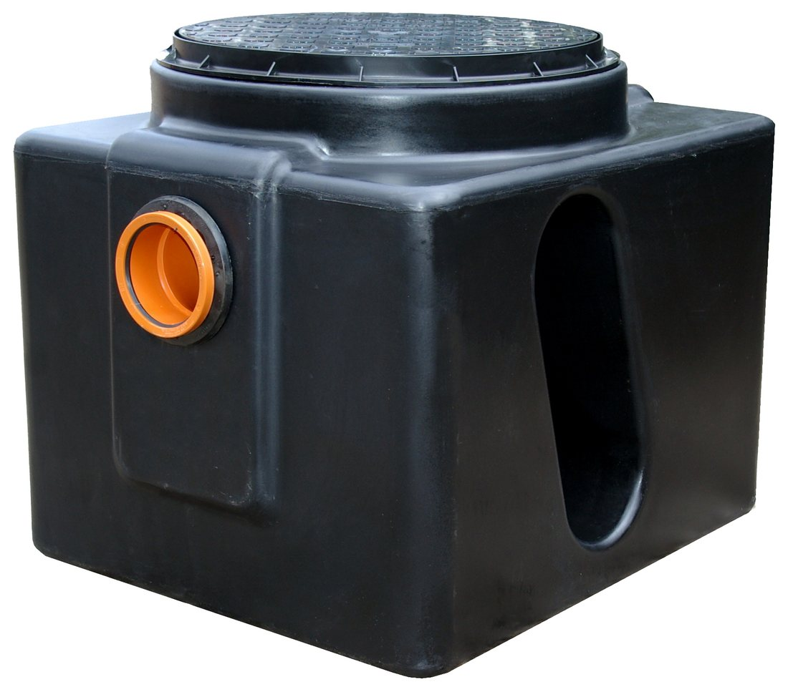

Overview
The RHINO GT range captures fats, oils and grease (FOG) from commercial kitchen waste water before it reaches the drain. Four models, Micro, Mini, Midi and Jumbo, cover kitchens from 150 to 600 covers per day.
Each body is rotationally moulded in one piece of HDPE with a round access cover on a raised collar, so the trap can be opened for routine emptying and cleaning.
How it works
Waste water enters through the inlet and is slowed by the integral internal baffle. Fats, oils and grease float to the surface and heavier solids settle, while the separated water passes on to the outlet. Retained FOG and sludge are removed through the access cover at each service.
Design compliance
- BS EN 1825-1:2004 grease separators, principles of design
- BS EN 1825-2:2002 selection of nominal size
- Building Regulations Part H1, FOG pre-treatment
- Water Industry Act 1991, trade effluent consent

Features & benefits
- Four models from 150 to 600 covers per day
- One-piece HDPE body for hygiene and durability
- Integral internal baffle system
- Round access cover for cleaning and FOG removal
- Direct connection to kitchen waste pipes
- Under-sink or floor-mounted installation
Applications
- Restaurant and takeaway kitchens
- Hotel and hospitality catering
- School and hospital kitchens
- Food preparation areas, canteens and staff kitchens
Selecting a model
Choose the model from the number of covers served per day, then confirm the inlet and outlet connection sizes for the kitchen waste pipework.
Specification
| Models | Micro, Mini, Midi, Jumbo |
|---|---|
| Capacity | 150 to 600 covers per day |
| Material | HDPE, rotationally moulded, one piece |
| Separation | Integral internal baffle |
| Access | Round access cover on raised collar |
| Installation | Under-sink or floor-mounted |
| Connections | Inlet and outlet sizes confirmed at order |
| Product code | GT-[MODEL], for example GT-MICRO |